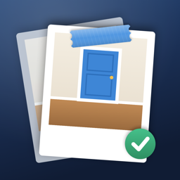

Photograph your rental the day you move in. On move-out day, your move-in photo floats over the camera so you can shoot the same spot again. Then see your state’s deposit deadline and send a letter with before-and-after photos.
Contact · FAQ · Privacy Policy
Found a bug, have a question, or want to suggest a feature? Email us. We usually reply within a few days.
Do I need an account?
No. Open the app and add your rental. There is no sign-up.
What does the match percentage mean?
While you line up a move-out photo, the app compares the outlines in the camera with your move-in photo. The higher the number, the closer your framing. It is saved with the photo and printed on the before-and-after report.
What is a photo fingerprint?
When a photo is saved, the app records its SHA-256 hash. If the file were edited later, the hash would no longer match. Each photo shows “Sealed” while it still matches, and reports list the fingerprints.
Is the deadline in the app correct for my state?
The app shows each state’s general deadline for returning a deposit or sending an itemized list. Laws change and some cities or leases set different rules, so check your state’s current law. You can adjust the number of days on the Deposit screen.
Is the letter legal advice?
No. Same Spot drafts a letter from the details you enter and gives general information. You can edit every word before you send it. For advice about your situation, contact a local tenant organization or attorney.
I moved in before I had the app.
Take photos as soon as you can and note the date in each note. Photos are stamped with the time they were actually taken.
What happens if I delete the app?
Your rentals and photos are stored only on your device, so they are deleted with the app. Export your reports to keep a copy.
Last updated: November 20, 2026
Same Spot is built so that your information stays with you. We do not collect, store, or share any personal data.
Photos you take are saved only inside the app on your device.
If you allow it, the app reads your location while the camera is open, to stamp where each photo was taken. Locations are saved only on your device and appear only in reports you choose to share. You can turn this off in Settings.
Addresses, deposit amounts, deductions, your contact details and your landlord’s details are saved only on your device.
Reports and letters are created on your device. They leave it only when you share them yourself.
The app contains no ads, no analytics and no tracking of any kind.
The app does not knowingly collect any information from anyone, including children under 13.
If this policy changes, the new version will be posted on this page with a new date.
Questions about privacy: tajimaru1209@gmail.com